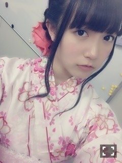
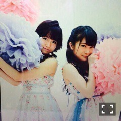

| 2015/07 20 Mon | ひめたん-0o0-その558 |
日曜の夜はらじらー！サンデー
新しいジングルも加わったりして
気がつけば2クール目に
突入してたんですね～
ひめはいつもらじらー当番の日が
楽しみで仕方がないです( ˇωˇ )さて昨日は。
浴衣を着ました！！！

ひゃーーー！
今年新調したやつ♡♡
浴衣を着るとテンション上がるね(´｡•ω•｡`)
前々回の放送で
浴衣女子いいよね～って話になったので
では着てみようと！なりました！
どうですか！浴衣女子！
藤森さんと中田さんがカメラマンになって
いっぱい写真も撮ってくださったので
らじらーのホームページ覗いてみてね～
ひょっとこが有能でした。
あ、でも、ちゅー写真はさすがに
マネージャーNG出たのかな？笑
声優アーツに上坂すみれさん、
乃木坂からは斉藤優里ちゃんが
ゲストにお越しくださいました！
ほんとに毎回声優アーツは
私の大好きな時間で！
おたより投稿したいくらいだよ！！
でもあれ読まれるのもきっと
すんごい確率なんだろうな......。
いつか応募してみよっかな、なんてね。
そしてゆったんは夏女ということで
夏女の称号をかけた
「熱血ディベート対決」というコーナーで
舌戦を繰り広げたわけなんですが
またしても狩れず( ´ ･ω･ ` )笑
ゆったんの夏女っぷりを
たっぷりお楽しみいただけたと思います。
あのー誰か
私の今までの通算成績表を
作ってくれる人はいないですか。
というか、大丈夫かな......
全然張り合えてないなあ......
ゆったんのお誕生日も
サプライズでお祝いしました！
お誕生日おめでとう！
また来たい！今度は最初から出たい！
出場最多メンバーの座を狙いたい！って
言ってくれました(´｡･v･｡｀)嬉しい
またいつでも来てねゆったん！


10代の間にやってやりたいすっげーこと
募集しているのでみなさん
思いついたらメール待ってます。笑
そして、またまたラジオのお話！
今週水曜日の「レコメン！」に
井上・新内・中元が出演しますo(^▽^)o
オテンキのりさんは以前
私が乃木ののMCをしていた時に
来てくださったことがあったので
久々にお話します。楽しみ～♪
「真夏の質問ノック祭り！」ということで
みなさんからの質問
どんどん送ってください。
22日といえば、
「太陽ノック」発売日なんだね！
早速新曲の感想とかも聞けるのかな？
よろしくお願いします( ˇωˇ )
おたよりの宛先はこちら↓
さらにもう一つお知らせ。
今週のミュージックステーションに
さゆちゃんのアンダーとして
出演することになりました！
舞台を頑張っているさゆちゃんの分まで
精一杯元気に歌って、みなさんに
パワーを届けようと思います( ˇωˇ )
テレビの前で応援しててください☆
・samuraiELO
・週刊ヤングアニマル
24日発売です！！
よろしくお願いします～＊
発売されたらオフショット載せるね。

 ひめたん最近お洋服の系統
ひめたん最近お洋服の系統
前と少し変わった気がするけど、
最近のお気に入りのブランド教えてほしい♡！
いろんなところで買ってるかな(´｡•ω•｡`)
ROJITA、Auntie Rosa が多いかな。
titty&Co、ISBIT、evelyn とか。
初森べマーズではひめたんは
何話くらいに出演するのかな？
どちらかというと
終盤の方だと思います！！
今年は夏らしいことしますか？
もしくは、やりたいことありますか？
浴衣着てお祭り行きたいな～
あと手持ち花火もしたい
河原とかも行きたい......
ツアーあるし難しいかなー？
最近告知ばかりで言ってなかったけれど
コメントいつもありがとう！
前回の日記にはポジションのことで
たくさんの応援メッセージいただいて
頑張らなきゃって思ったし
これからライブが楽しみになりました♪
今週末はやっと握手会もあるし
早くみなさんとお話したいな～
そうだ、真夏さんのブログで
FLASHオフショット祭りやってたから
ひめも真夏さんとのお気に入りの写真を。


まなひめ♡
(＊´・ω・＊)
コメント(951)
2015/07/20 23:48